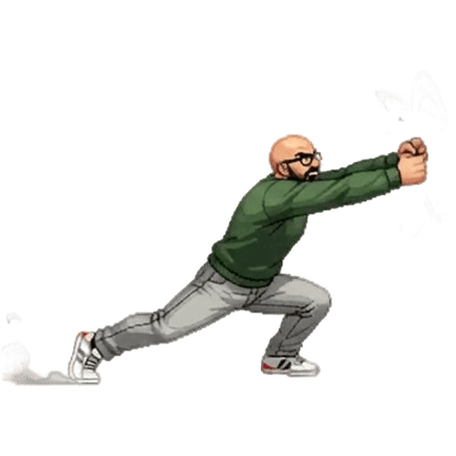
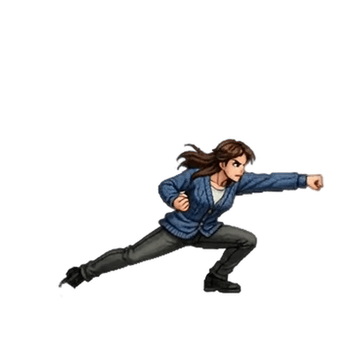
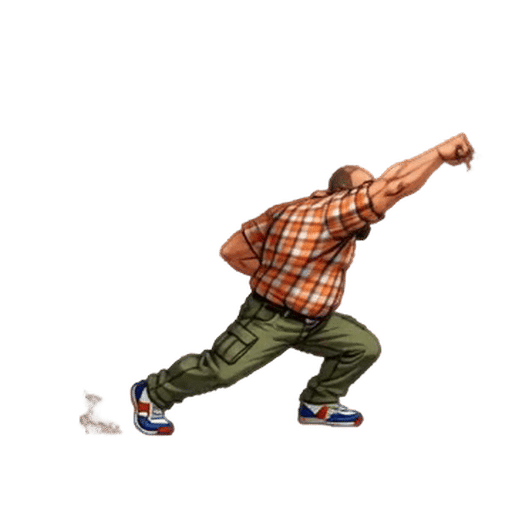
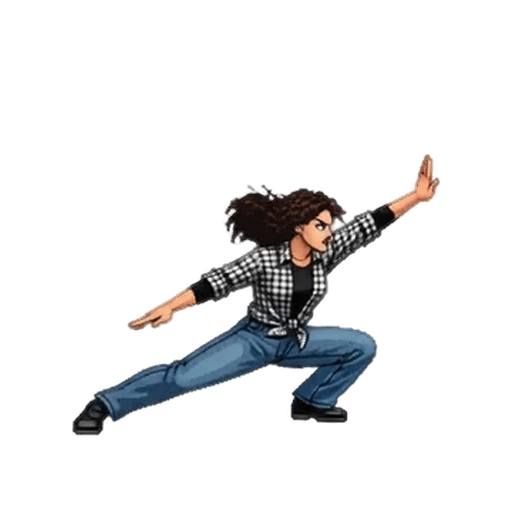
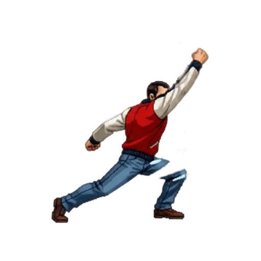
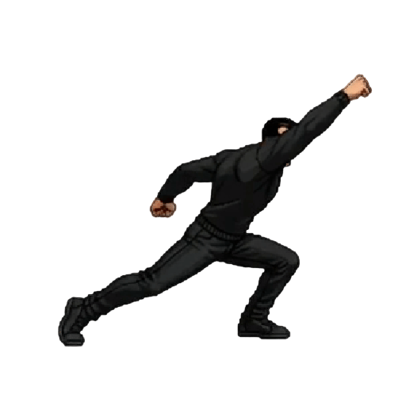
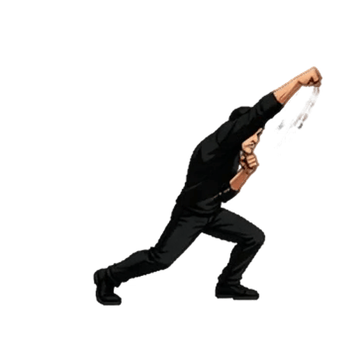
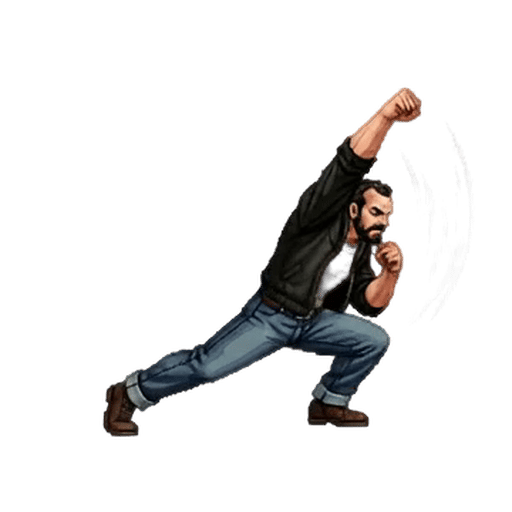
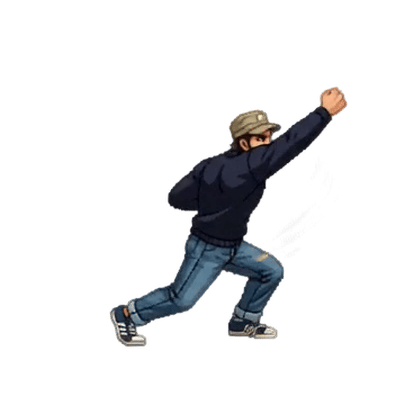

Apri Pugno forte basso nella demoTiming Pugno forte basso
Aggiornamento: 2026-11-22. Integrati 9 personaggi su 48. A velocita 1x il frame scelto di impatto principale inizia esattamente a 500 ms (0,50 s); il ciclo completo termina a 1000 ms (1,00 s). La fase successiva all'impatto dura 500 ms (0,50 s).
Tutti i nove personaggi usano solo la sequenza sorgente in avanti, che contiene gia il recupero. Le scie presenti nei PNG provengono dai sorgenti AutoSprite.
Gli atlas referenziano le celle del PNG anche nel ritorno: i pixel non sono duplicati, ridimensionati o ricentrati. Le durate variabili sono incorporate nel catalogo offline e negli atlas, utilizzabili come riferimento per Godot. Gli fps medi non descrivono le due fasi: la tabella indica i millisecondi effettivi di ogni passo prima e dopo l'impatto.
La colonna Frame distingue le celle sorgente utilizzate dai passi della sequenza riprodotta, che includono il ritorno. I frame di sequenza in tabella partono da 1; gli indici sorgente partono da 0 e si riferiscono al foglio gia accorciato scaricato da AutoSprite. Nessun vecchio taglio e stato applicato una seconda volta. Tutti i frame dei fogli selezionati sono conservati.
Controllo trasparenze: esaminati tutti i 441 fotogrammi con canale alpha e confronto su fondo bianco e nero. Marsan presenta zone trasparenti interne sulla manica durante il caricamento e una discontinuita del pantalone vicino al ginocchio durante il colpo; sono difetti gia presenti nel sorgente AutoSprite. Scie, polvere ed effetti semitrasparenti incorporati nei restanti fogli sono conservati. I contatori automatici di buchi includono anche spazi naturali tra arti: le anomalie sono state valutate visivamente.
Apri il confronto alpha dei nove personaggi / Dettaglio dei difetti di Marsan / Esito e sorgenti del controllo.
Il marcatore riguarda la posa scelta del colpo principale. Eventuali estensioni preliminari con altri bracci, scie grafiche e pose estese mantenute presenti negli asset approvati sono conservate e segnalate nelle note. Per questo alcune pose estese adiacenti possono comparire prima o dopo il marcatore. Riproduci tutte allinea le nove schede; modificare la velocita scala impatto e durata nella stessa proporzione.
Personaggi senza Pugno forte basso importato (39): ALEX, ANGELA, ANTONINO, BARBARA-FIOCCA, Bonazzi, Chiara-Molina, CHIARA-TONIOL, CONDELLO, DINO, EMMA, EROS, FARA, FRA-AMATO, FRANCESCA-RIVELLA, FRANCESCO-LEONI, GENNARO, Giordano, GIORGIO, JERRY, LIVIO, LUANA, MANU, MARCO-BALPO, Marco-Rossetti, MARIO, MARTINI, MATTEO, MIKE, MORI, PEIROLO, Simona, TOMMASO, ZICHELLA, Franco, Tamara, Patrick, Luca-Arcangeli, Cristian-Canino, Alessandro-Mantelli.
Scarica il report CSV / Timing JSON / Manifest e provenienza
| Personaggio | Posa scelta | Frame sorgente / riprodotti | Riproduzione | Frame impatto | Impatto | Fase successiva | Ciclo | Durata passo prima / dopo | Note | Asset |
|---|
| ALBERTO |  | 49 / 49 | Solo avanti | 20 / 49
sorgente 19 | 500 ms | 500 ms | 1000 ms | 26.316 / 16.667 ms | Posa di impatto scelta visivamente; recupero in guardia accovacciata gia incluso, solo avanti. Eventuali scie o flash sono gia incorporati nel PNG sorgente. | Atlas e sequenza
cmwrt17mb001tkz9p8xnf7gec |
|---|
| Elisa |  | 49 / 49 | Solo avanti | 20 / 49
sorgente 19 | 500 ms | 500 ms | 1000 ms | 26.316 / 16.667 ms | Posa di impatto scelta visivamente; recupero in guardia accovacciata gia incluso, solo avanti. | Atlas e sequenza
cmwrs7kge000p10k67l3j5ow5 |
|---|
| FABIO-CLARA |  | 49 / 49 | Solo avanti | 19 / 49
sorgente 18 | 500 ms | 500 ms | 1000 ms | 27.778 / 16.129 ms | Posa di impatto scelta visivamente; recupero in guardia accovacciata gia incluso, solo avanti. Eventuali scie o flash sono gia incorporati nel PNG sorgente. | Atlas e sequenza
cmwru694t00acfqpcwamm8ds2 |
|---|
| FRA-TAVARONE |  | 49 / 49 | Solo avanti | 12 / 49
sorgente 11 | 500 ms | 500 ms | 1000 ms | 45.455 / 13.158 ms | Posa di impatto scelta visivamente; recupero in guardia accovacciata gia incluso, solo avanti. | Atlas e sequenza
cmwrt1jr600302d51bqqs452r |
|---|
| MARSAN |  | 49 / 49 | Solo avanti | 22 / 49
sorgente 21 | 500 ms | 500 ms | 1000 ms | 23.810 / 17.857 ms | Posa di impatto scelta visivamente; recupero in guardia accovacciata gia incluso, solo avanti. Controllo alpha: trasparenze sorgente rilevate sulla manica e discontinuita sul pantalone durante il colpo; vedere il report alpha. | Atlas e sequenza
cmwrt2l7s003s2d513pndla0v |
|---|
| Oscar |  | 49 / 49 | Solo avanti | 20 / 49
sorgente 19 | 500 ms | 500 ms | 1000 ms | 26.316 / 16.667 ms | Posa di impatto scelta visivamente; recupero in guardia accovacciata gia incluso, solo avanti. | Atlas e sequenza
cmwrt100x002v2d51m7soygtj |
|---|
| PEPPO |  | 49 / 49 | Solo avanti | 14 / 49
sorgente 13 | 500 ms | 500 ms | 1000 ms | 38.462 / 13.889 ms | Posa di impatto scelta visivamente; recupero in guardia accovacciata gia incluso, solo avanti. Eventuali scie o flash sono gia incorporati nel PNG sorgente. | Atlas e sequenza
cmwrsa31w0016117q8eaijs6i |
|---|
| PIPPO |  | 49 / 49 | Solo avanti | 16 / 49
sorgente 15 | 500 ms | 500 ms | 1000 ms | 33.333 / 14.706 ms | Posa di impatto scelta visivamente; recupero in guardia accovacciata gia incluso, solo avanti. Eventuali scie o flash sono gia incorporati nel PNG sorgente. | Atlas e sequenza
cmwrt1bdr0020kz9pymrnv5al |
|---|
| SBOZ |  | 49 / 49 | Solo avanti | 17 / 49
sorgente 16 | 500 ms | 500 ms | 1000 ms | 31.250 / 15.152 ms | Posa di impatto scelta visivamente; recupero in guardia accovacciata gia incluso, solo avanti. Eventuali scie o flash sono gia incorporati nel PNG sorgente. | Atlas e sequenza
cmwrs9rfd000phckmy46gzv39 |
|---|